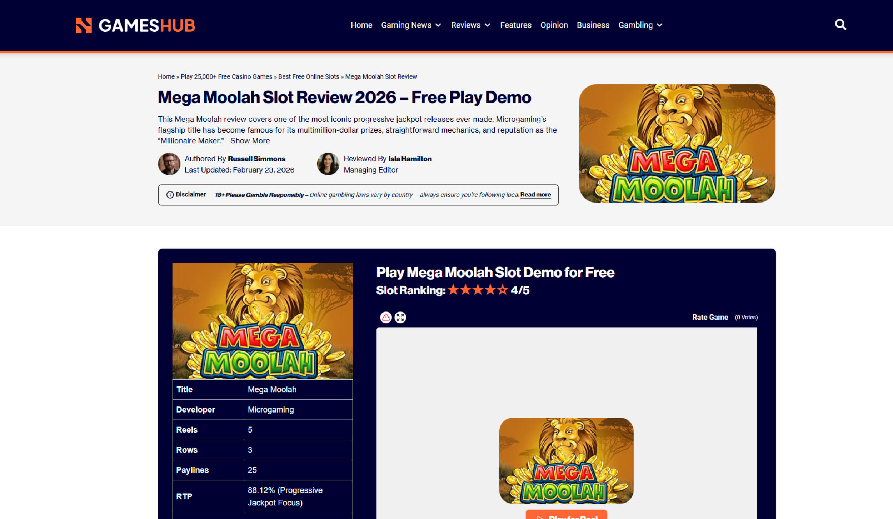
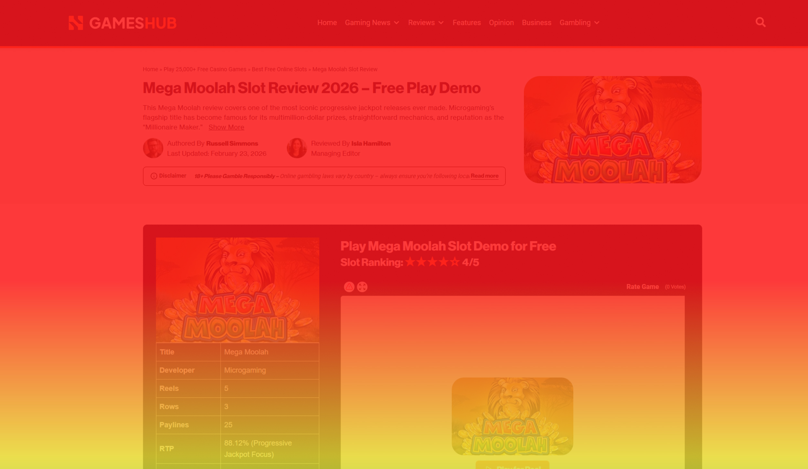

Games Demos to Drive Revenue
Redesigning the demo experience and game discovery journey to improve evaluation, engagement and progression to partner casinos.

Product Design
Figma, Hotjar, A/B Testing
2 months
My Role
- Analysed Hotjar data, heatmaps and session recordings to identify user behaviour, friction points and drop-offs.
- Conducted competitor benchmarking and mapped user journeys, translating insights into wireframes for game discovery and demo experiences.
- Designed a category-based game listing experience with filtering, alongside responsive, high-fidelity UI using the existing design system.
- Tested prototypes with eight participants and iterated on the designs, improving the CTA behaviour to maintain the conversion journey during gameplay.
The Problem
GamesHub attracted 50k+ monthly users to its demo pages, but only 2.82% continued to partner casinos. Users also had limited ways to discover games, key information was buried below the fold, and there was no clear path from gameplay to real-money play. I needed to create a more connected journey that helped users discover, evaluate and continue exploring games.
Research & Insights

Orignal version

Heatmap
I used Hotjar data, heatmaps and session recordings to understand how players interacted with the existing experience and where they dropped off.
The research showed that users were highly engaged with gameplay but encountered friction around it. Key game information and expert reviews were difficult to find, there was limited social proof, and users had no clear way to continue exploring after finishing a game. High-intent players also lacked a persistent route to real-money play.
These findings shaped the experience around three priorities: make games easier to discover, show useful information at the right moment, and create a clearer journey between gameplay and the next step.
Ideation & Strategy
I mapped the new journey around four key moments: Discover → Play → Evaluate → Continue

Homepage updated

Demo listing page
To make the growing game catalogue easier to navigate, I designed a dedicated Game Demos listing page. Games were organised into category-based carousels, with links through to dedicated category pages for deeper exploration. I also introduced a user-friendly filtering system to help players quickly narrow down the catalogue and find games relevant to them. This created clearer entry points into individual demos from both the homepage and games listing, connecting discovery directly to gameplay.

Demo listing page
Within the demo page, I moved key game information alongside the game itself and show expert and user ratings to help players quickly evaluate a game. I also introduced lightweight thumbs-up/thumbs-down interactions to encourage users to share their opinion without interrupting gameplay, creating an additional source of social proof for future players.
A contextual “More from [Provider]” carousel beneath the demo gave users an immediate way to continue exploring games from the same provider. Finally, I introduced clear Free Play and Play for Real Money actions around the game, giving users distinct paths depending on whether they wanted to continue playing or move towards a casino.


Design & Testing
I created responsive, high-fidelity prototypes using the existing design system, prioritising the mobile experience rather than simply scaling the desktop layout down.
On desktop, game details sit alongside the demo so players can view key information while playing. On mobile, I moved these details into a compact accordion below the demo. This reduced the amount of vertical space they occupied and kept the “More from [Provider]” games visible without excessive scrolling.
Usability testing with eight participants uncovered an issue with the initial CTA placement. Users naturally pressed Free Play, which launched the demo into full-screen mode and caused the Play for Real Money CTA to disappear. This meant the conversion path disappeared at the exact moment users became most engaged with the game. I iterated on the interaction by moving the secondary conversion CTA below the active demo, keeping it visible throughout gameplay without obstructing the experience.
Outcome
The redesigned experience was tested through an initial A/B test and produced measurable improvements:
- +18% increase in direct conversions
- +28% lift in outbound clicks to partner casinos
The results showed that improving the connection between game discovery, gameplay, information and the next step increased progression towards partner casinos.
What I Learnt
Testing interactive prototypes helped me catch a conversion issue that wasn't obvious in the static design. It reinforced the importance of testing established patterns with real users rather than assuming they work in every context. Small interaction changes can improve the experience of an entire user journey.